2. How to find the maximum flow?
For the previous example, we happen to obtain the maximum flow of the network. But it is obvious that we will not always be lucky.
We need a methodical way to procedurally acheive maximum flow, and a perfect method for this is called the Ford-Fulkerson Method.
In order to proceed, you need to understand three important concepts: Residual Network, Augmenting Path, Graph Cuts.
- Residual Network
Intuitively, given a flow network G and a flow f, the residual network G' consists of edges with capacities that represent how
we can change the flow on edges of G. An edge of the flow network can admit an amount of additional flow equal to the edge's capacity
minus the flow on that edge. If that value is positive, we place that edge into G' with a "residual capacity" of c'(u, v) = c(u, v)-f(u, v).
The only edges of G that are in G' are those that can admit more flow; those edges (u, v) whose flow equals their capacity have c'(u, v) = 0,
and they are not in G'.
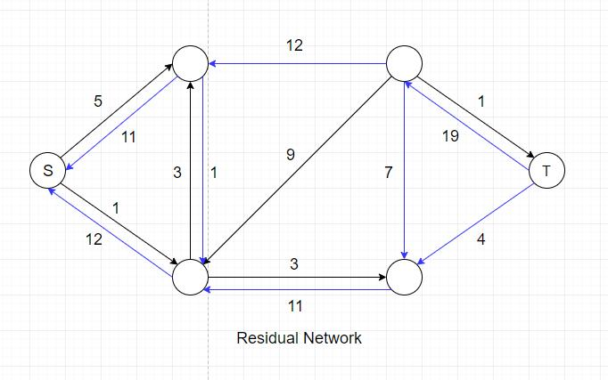
The blue edges in the residual network represents the actual flow they carry in network G. Note that the direction of these edges has been
reversed in the residual network. We need these blue edges because we might have to decrease flow in order to obtain global maximum.
- Augmenting Path
An augmenting path is essentially a simple path from source to target in the residual network. By the definition of the residual network,
we may increase the flow on an edge (u, v) of an augmenting path by up to c'(u,v) without violating the capacity constraint on whichever of
(u, v) and (v, u) is in the original flow network G.
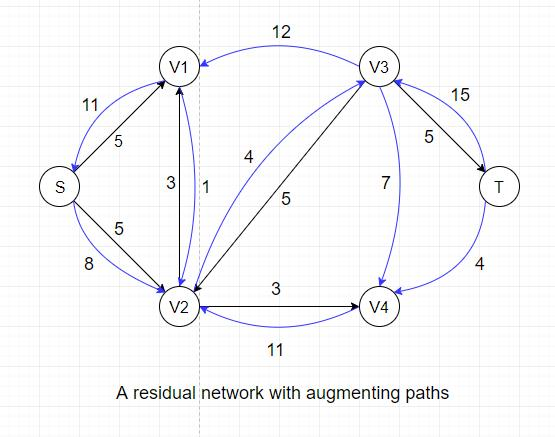
For example, there exists an augmenting path: S --> V2 --> V3 --> T, in the residual network above that could increase the overall flow by 4
because the maximum residual capacity along the path is 4 (edge V2-->V3).
- Cuts of Flow Networks
A cut in a flow network partitions vertices into two groups(source group and target group) where Source and Target vertices are separated. All edges in the network are either
intact or cut once (from S to T or from T to S)
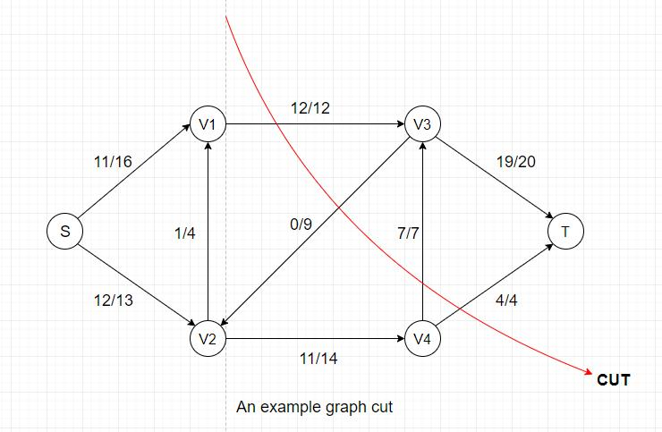
Every cut has its own flow and capacity:
- Flow(Cut) = Sum of flows from Source group to Target group - Sum of flows from Target group to Source group
- Capacity(Cut) = Sum of capacities from Source group to Target group
From these two equations, we can easily see that Flow(Cut) <= Capacity(Cut) always holds
because the flow value of each edge is always less than or equal to the edge's capacity.
Another important fact is that once all flow values are determined in a network, the flow values for all cuts are identical.
In the example above, the flow for this particular cut = 12(V1-->V3) + 7(V4-->V3) + 4(V4-->T) - 0(V3-->V2) = 23,
the capacity = 12(V1-->V3) + 7(V4-->V3) + 4(V4-->T) = 23.
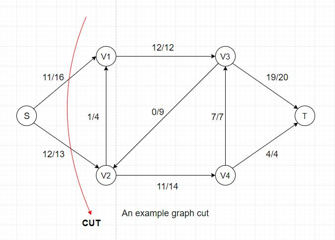
If we examine another cut of the same network, we can see that the flow for this cut = 11(S-->V1) + 12(S-->V2) = 23, which is also equal to the previous cut's
flow value.
In a flow network, a minimum cut is a cut whose capacity is minimum over all cuts of the network. The cut shown above is a minimum cut of the network.
Now we have Flow(Any Cut) <= Capacity(Any Cut) and Flow(Cut) = Flow(Any Other Cut), we can conclude that maximum flow <= minimum cut.
The Ford-Fulkerson Method
Once you're familiar with the previous three concepts, the Ford-Fulkerson Method will become very easy to understand. It contains three main steps:
- Find a simple augmenting path from source to target in the residual graph
- Locate the edge with the smallest residual capacity and record the value
- Update flow value for all edges along the path according to the recorded value
The first step requires finding a simple path in a graph, for which we can use several approaches: breadth first search, depth first search, arbitrary pick,
or any other search that can yield a simple path. There will be time complexity differences among these search techniques but it is out of our scope here.
The second step is very straightforward: walk through the path and report the minimum residual capacity, which takes O(|V|) time.
The third step involves an update for the flow values along the path. The update rule is that if the edge(with direction) is in the orginal network, increase
its flow by the recorded value, and vice versa.
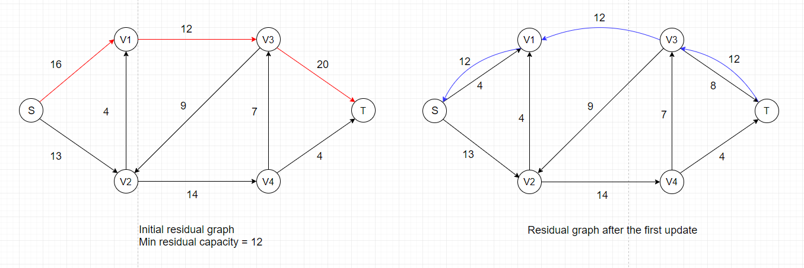

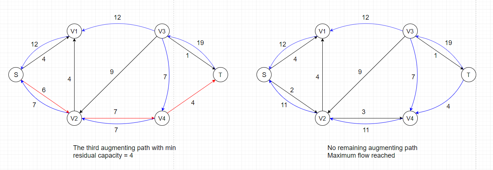
The steps shown above only represents one specific order in which we update the flow values. As we've discussed previously, there are several ways to find
simple paths in a connected graph, and the most common approach we use is breadth-first search. The algorithm that uses breadth-first search to find augmenting
paths is called the Edmonds-Karp algorithm. Detailed implementation of the algorithm and time complexity analysis can be found here:
The Edmonds-Karp Algorithm
Push-Relabel Method
Currently, the most time-efficient algorithms for finding maximum flow are using the push-relabel method rather than the Ford-Fulkerson method. A crucial difference
between these two approaches is that Ford-Fulkerson method examines the entire residual graph during each iteration while push-relabel method only processes
one vertex at a time. An obvious outcome is that push-relabel method costs O(V²E) but Ford-Fulkerson method costs O(VE²).
Before going any further, we need to introduce two core concepts of push-relabel algorithm: Excess and Height. Imagine every intermediate vertex
(all vertices except for Source and Target) as a storage point that can temporarily store certain amount of flow when the algorithm progresses. What we're trying to do is essentially
to pure as much flow as we can from upper level (vertices with larger heights) to lower level (vertices with smaller heights), just like cascades.
We define a height function h: h(Source) = |V|, h(t) = 0, h(u) ≤ h(v) + 1 for every residual edge (u, v) ∈ E.
To clarify some notations for push-relabel algorithm: v.h represents the height of a vertex, v.e represents the excess flow stored in
a vertex. The height of all vertices (except for Source) are initially 0 and the excess flow of all vertices are initially 0. The height of Source is equal to the number of vertices |V|.
The height of Target is always zero.
As the name implies, push-relabel method consists of two main operations:
- Push Operation
This operation only applies to vertex u if u is overflowing, meaning that u.e > 0.
By pushing, we send as much flow as we can from
u to one of its neighbors v where u.h = v.h + 1 and Δf(u, v) = min(u.e, C'(u, v)).
A saturating push means f(u, v) = C'(u, v) after the push.
A nonsaturating push means f(u, v) < C'(u, v) after the push.
Note: C'(u, v) is the residual capacity of edge (u, v). The constraint u.h = v.h + 1 doesn't apply if u is the Source.
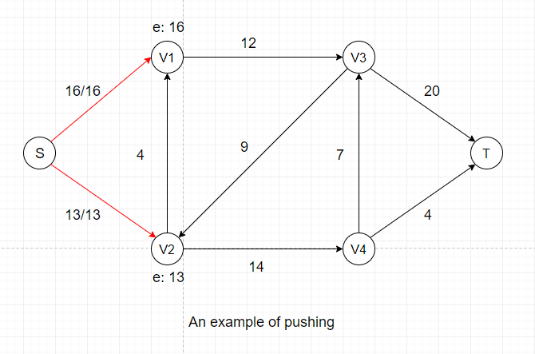
In the example above, we are pushing the maximum amount of flow we can (flow value is equal to capacity) to two neighbors of Source, which is the first step of push-relabel algorithm.
After this push, V1 and V2 each gets certain amount of temporary flow, denoted as e: 16 and e: 13. We can see that all neighbors of V1 and V2
have a height of 0, which is the same as V1 and V2.
So we cannot push any flow out of V1 and V2 if we don't adjust their heights, which is called the Relabel Operation.
- Relabel Operation
This operation only applies to vertex u if u is overflowing and all its neighbors N(u) satifies u.h ≤ v.h for all v ∈ N(u).
By relabeling, we increase the
height of vertex u to 1 + min(v.h for all v ∈ N(u)). Since we can only push excess flow from a vertex to its downhill neighbors, adjusting heights of vertices is necessary
to keep the algorithm progressing.
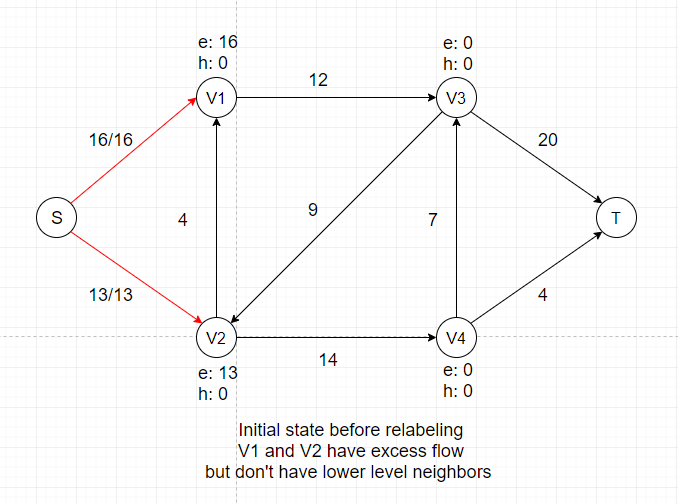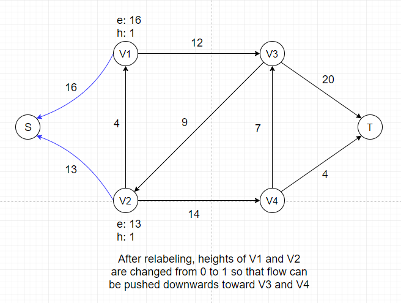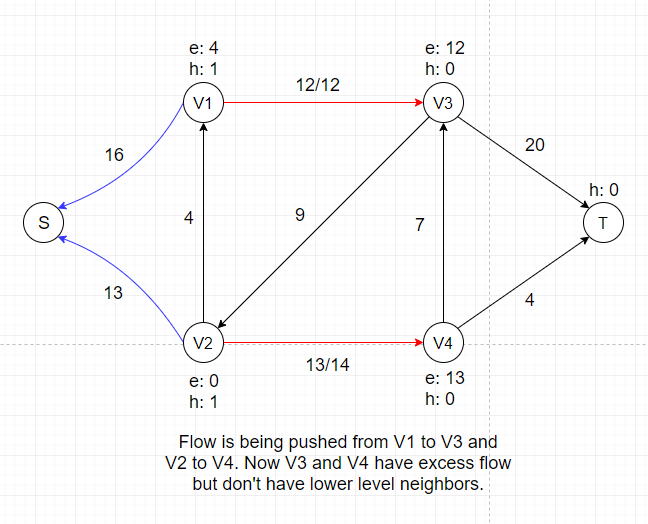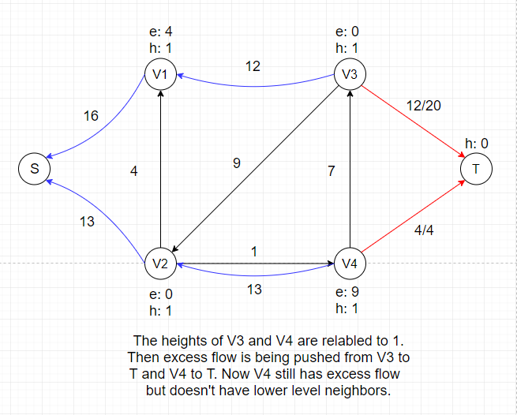
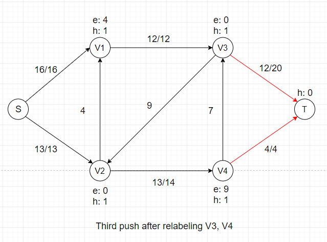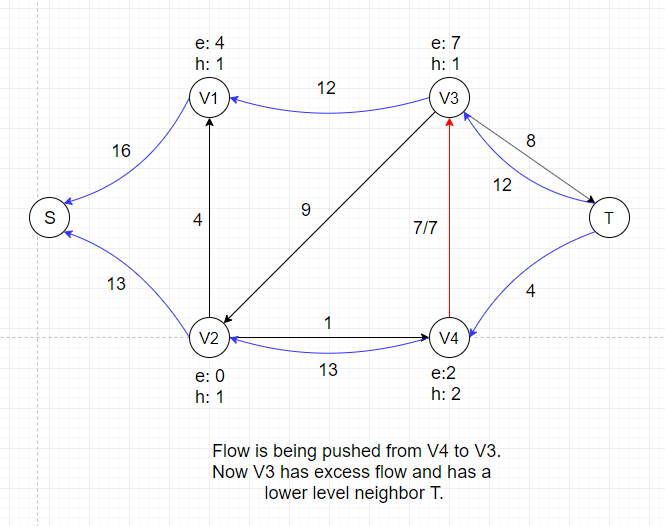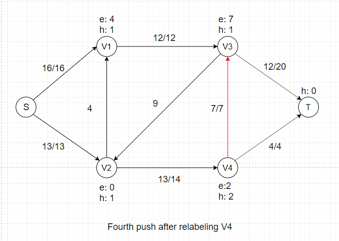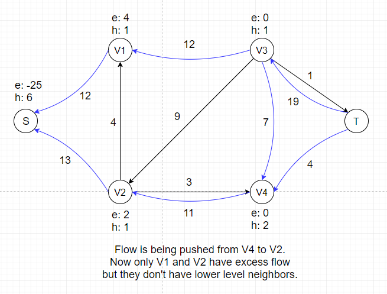
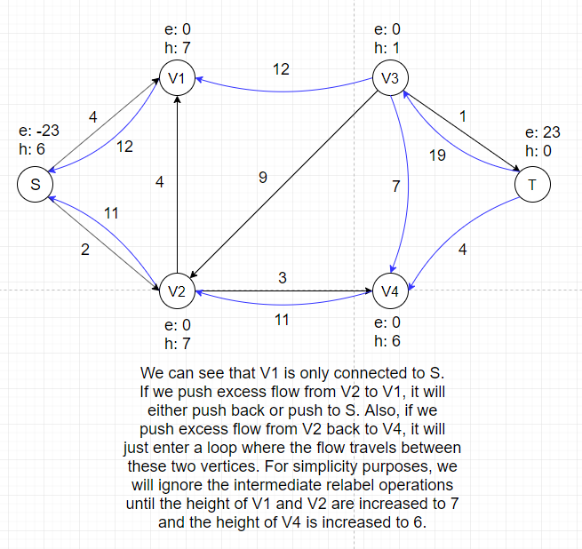
In the example above, there is no applicable push or relabel operations and thus the algorithm terminates.
Proof of Correctness
Before proving the whole algorithm is correct, we need to prove that the height function h we define still maintains the height attribute after all the relabel operations.
The proof is by induction on the two kinds of basic operations performed. Initially, h is a height function as defined.
We claim that if h is a height function, then a relabel operation leaves h a height function. If we look at a residual edge (u, v) ∈ E that leaves u, then a relabel
operation ensures u.h ≤ v.h + 1 afterward. If we look at a residual edge (w, u) ∈ E that enters u, since a relabel operation increases the height of u by at least 1, w.h ≤ u.h + 1 before
the relabel operation implies that w.h < u.h + 1 afterward.
Now we claim that if h is a height function, then a push operation leaves h a height function.
A push operation may add an edge (v, u) to the residual graph. In this case, we have v.h = u.h - 1 < u.h + 1 because we are pushing flow from u to v. A push operation may also remove edge
(u, v) from the residual graph. In this case, removing an edge also removes the corresponding constraints, and h remains a height function.
After proving the stability of height function, it is really simple to prove that the flow f we obtain from push-relabel method is indeed the maximum flow: we just need to prove there is
no path from S to T in the residual network after the algorithm terminates.
Let's first suppose that there exists a simple path P from S to T in the residual network for contradiction purposes, where P = (V0, V1, . . . , Vk).
For i = 0, 1, 2, . . . , k - 1, edge(Vi, Vi+1) ∈ E. By the definition of height function h, h(Vi) ≤ h(Vi+1) + 1. Combining these two inequalities over path P yields h(s) ≤ h(t) + k.
Since P is a simple path, k < |V|. So we can get h(s) ≤ 0 + k < |V|, which contradicts the requirement that h(s) = |V|.
Hence, there is no simple path from Source to Target in the residual graph. By the max-flow min-cut theorem we've shown in Ford-Fulkerson method, the
flow we obtain is the maximum flow.
Time Complexity Analysis
- First, we need to prove that if there is an overflowing vertex x, there must exist a simple path from x to Source in the residual graph.
For an overflowing vertex x, let U = {v: there exists a simple path from x to v in the residual graph} and suppose S ∉ U. Let T = V - U. Now we sum over all vertices in U to obtain
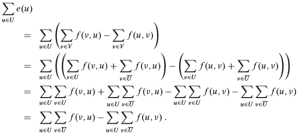
We know that the quantity Σe(u) must be positive because e(x) > 0, x ∈ U, all vertices other than S have nonnegative excess and S ∉ U. Thus, we have
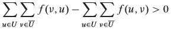
In order for this inequality to hold, we must have 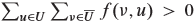. So there must exist at least one pair of vertices u' ∈ U and v' ∈ T with f(v', u') > 0. But if
f(v', u') > 0, there must be a residual edge (u', v'), which means there exists a simple path from x to v', contradicting the assumption that S ∉ U.
- Second, we need to prove that the height of all vertices is at most 2|V| - 1.
The heights of Source and Target never change because they are not overflowing by definition. The height of Source is always |V| and the height of Target is always 0.
Now consider any vertex u ∈ V - {S, T}, initially u.h = 0 ≤ 2|V| - 1. When u is relabled, it must be overflowing, meaning that there is a simple path P from u to S in the residual graph.
Let P = (V0, V1, . . . , Vk), where V0 = u, Vk = S, and K ≤ |V| - 1. For i = 0, 1, . . . , k - 1, we have (Vi, Vi+1) ∈ E, and therefore, Vi.h ≤ Vi+1.h + 1. Expanding these inequalities
over path P yields u.h = V0.h ≤ Vk.h + k ≤ S.h + |V| - 1 = 2|V| - 1.
- Third, we need to prove that the number of relabel operations during the execution of a push-relabel algorithm is at most (2|V| - 1)(|V| - 2) < 2|V|².
Only the |V| - 2 vertices in V - {S, T} can be relabeled. Since the height of all vertices is at most 2|V| - 1, each u ∈ V - {S, T} can be relabeled at most 2|V| - 1 times. Thus the
total number of relabel operations is at most (2|V| - 1)(|V| - 2).
- Fourth, we need to prove that the number of saturating pushes during the execution of a push-relabel algorithm is at most 2|V||E|.
For any pair of vertices (u, v) ∈ V, we will count the saturating pushes from u to v and from v to u together, calling them the saturating pushes between u and v. Suppose a saturating
push from u to v has occured, it means u.h = v.h + 1 at that time. In order for another push from v to u occur, v.h must increase by 2 since height never decreases. Recall that the
upper bound of height is 2|V| - 1, so the number of times any vertex can have its height increase by 2 is less than |V|. Since both u and v can increase their height to 2|V| - 1, the
total number of times their height increases is less than 2|V|. Multiplying by the number edges yields an upper bound of 2|V||E| saturating pushes.
- Finally, we need to prove that the number of nonsaturating pushes during the executiono of a push-relabel algorithm is less than 4|V|²(|V| + |E|).
Define a potential function  . Let's examine the two ways in which Φ may increase. First, relabeling a vertex u increases Φ by less than 2|V| since the
relabeling cannot increase u's height by more than its maximum height, which is at most 2|V| - 1. Second, a saturating push from u to v increases Φ by less than 2|V| since u's height
doesn't change and v's height cannot excede 2|V| - 1.
. Let's examine the two ways in which Φ may increase. First, relabeling a vertex u increases Φ by less than 2|V| since the
relabeling cannot increase u's height by more than its maximum height, which is at most 2|V| - 1. Second, a saturating push from u to v increases Φ by less than 2|V| since u's height
doesn't change and v's height cannot excede 2|V| - 1.
Now we show that a nonsaturating push from u to v decreases Φ by at least 1. Before the nonsaturating push, u is overflowing and v may or may not be overflowing. u is no longer
overflowing after the push. Therefore, the potential function Φ has decreased by exactly u.h and has increased by either 0 or v.h. Since u.h = v.h + 1, the net effect is that Φ has
decreased by at least 1.
Thus, during the course of the algorithm, the total amount of increase in Φ is due to relabeling and saturating pushes. Previous results constrain the increase to be less than
(2|V|)(2|V|²) + (2|V|)(2|V||E|) = 4|V|²(|V| + |E|).
In conclusion, the algorithm terminates after O(|V|²|E|) operations. We're not giving specific implementation of push-relabel method here but
there is a way to achieve O(|V|) per relabel and O(1) per push, meaning that the total time complexity of the algorithm is O(|V|²|E|).
3. What can we use flow network for?
Bipartite Matching Problem
The most common application of flow network is to find the maximum matching of a bipartite graph.
A graph G(V, E) is bipartite if V can be partitioned into two sets A and B, where A ∪ B = V and for all edges e = (a, b) ∈ E, a ∈ A, b ∈ B.
A matching in a graph is a set of edges M ⊆ E such that for every pair of edges e1, e2 ∈ M, e1 and e2 do not share a common end point.
A matching is maximal if it cannot be extended to a larger matching, and maximum if it has the most edges out of any matching M' of G.
After understanding the basic concepts, we can now introduce the bipartite matching problem:
- Input: two mutually exclusive sets of equal size U and V, along with a list of ordered pairs of the form (u, v) where u ∈ U and v ∈ V,
indicating pairs of members, one of each set that can be "paired" together.
- Output: True, if there exists a way to pair up each item in U with an item in V such that each item in both sets appears in exactly one pairing, and false otherwise.
How do we turn this problem into a flow network?
Create one vertex for each item in each set and add source and sink vertices. Add an edge from the source to each item in set U with capacity 1.
Add an edge from each item in set V to the sink with capacity 1. Add an edge between each item in set U and set V that are in the set of ordered pairs with capacity 1.
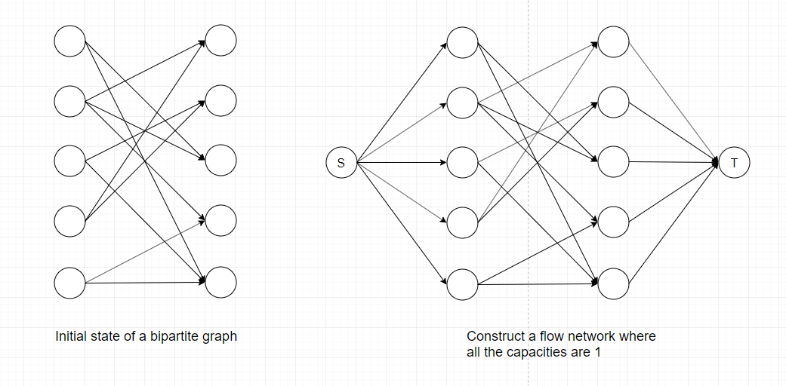
Since the capacities of all edges are 1, finding the maximum flow means including as many edges as we can into the matching. If you also want to know specific edges that
are included in the matching, keep track of each edge added during each iteration of the Ford-Fulkerson method.
Note: If the sizes of two sets are not equal, we can still use maximum flow algorithms to solve matching problems.
How can we apply bipartite matching in real life scenarios?
Suppose N teams attend a dinner. Team i has Ti members. There are M tables at the dinner, with M ≥ N. Table i can has Si chairs. We wish to seat all teams such that no two team
members are at the same table, so that we maximum students getting to meet members of other teams.
Solution: Now we need to create a flow network whose capacities are not all 1 because there are different constraints on input and output. Create one vertex for each team and one for each table.
Create extra source and sink vertices. Create edges from the source to each team with a capacity of Ti. Create edges from each table vertex to the sink vertex with capacity Si.
Finally, add edges from each team to each table, with capacity 1, since each team can provide at most one person per table. Run the network flow algorithm.
If the maximal flow equals the sum of the number of team members, the seating can be done. Otherwise, it can not be.
Normally, bipartite matching problems will involve much more vertices than the example shown in previous sections and it is not space-efficient to demonstrate each step of how to find
the maximum flow in a bipartite matching problem here. If you're interested in a step-by-step solution, visit here to see an interactive
bipartite matching demo.
Image Segmentation
Bipartite matching is a very direct use of flow network as the process of constructing a network is fairly simple. Another more practical use of flow network is called
Image Segmentation.
What is image segmentation?
Image segmentation can be defined as the task of distinguishing objects from background in unseen images, which requires partitioning an image into a foreground and a background.
It is a very important task in computer vision field.
How to connect image segmentation to flow network?
Basically each pixel in the image is viewed as a node in a graph, edges are formed between nodes with weights corresponding to how alike two pixels are, given some measure of
similarity, as well as the distance between them.
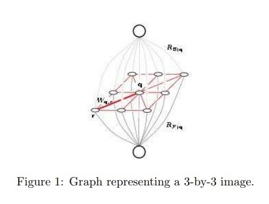
There are a few things we need to do before applying any of the maximum-flow algorithms mentioned earlier:
- Create a source vertex s to represent the foreground.
- Create a target vertex t to represent the background.
- Connect s and t to every pixel(vertex) and assign capacity Ai to edge (s, i) and capacity Bi to edge (i, t).
Note: Capacities assigned in this step requires certain
prior knowledge about the problem(directly given or from previous segmentation results). They are not arbitrary!
- Direct edges away from s and into t.
- Let E represent all the edges that are not incident to s and t. Replace each undirected edge in E with two directed edges of capacity 1.
Now, the maximum-flow(minimum-cut) of this graph will be the segmentation of the original graph. This segmentation should be a partition such that similar pixels close to each other
will belong to the same partition.
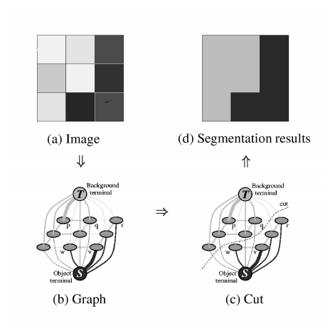
In this case, we are only dealing with the most fundamental image segmentation where the image is a simple pixel grid. When training models for machine-learning related image
segmentation tasks, the capacities of all edges should be determined by tuning parameters weighing the importance of different features in the image. Detailed calculation of edge
weights can be found here: Image Seen as a Graph
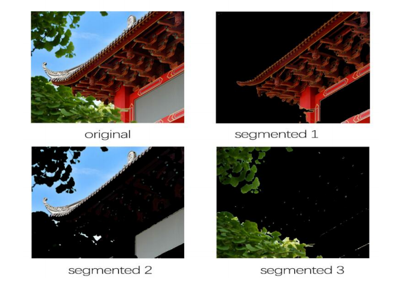
Complicated colored images shown above needs prior knowledge (importance of each feature) to adjust edge weights when applying the graph cut method. Different types of object/background
combination requires different image descriptors and pixel models in order to acquire higher accuracy. It is essentially a combination of machine learning and max-flow min-cut algorithm
to achieve maximum efficiency as well as high precision.
Network Connectivity
Often one is interested in how connected a graph is, that is how easy is it to get from one vertex to another and how resilient a graph is to losing edges or vertices.
This notion of connectivity is particularly useful in computer networks where one doesn't want a network or even the entire internet to fall apart when a handful of computers
or wires are removed for maintenance or by viruses. The ultimate goal is to show that the largest number of distinct (i.e. using different edges)
routes between two vertices in a graph is equal to the minimal number of edges that can be cut to separate those vertices.
Menger's Theorem
Since we're already familiar with graph cuts and flow network, Menger's Theorem should sound fairly straightforward:
For any two distinct vertices s and t of an undirected graph, the minimal number of edges we can cut to separate s from t is equal to the maximal number of paths from s
to t which do not share any edges (edge-disjoint).
Proof: To apply the max-flow min-cut theorem we replace each edge in G by two directed edges going in opposite directions and assign each edge capacity 1.
Since we have restricted the capacity to be 1, the capacity of a cut is equal to the number of edges, k, in the cut. For a flow to have maximal value it must be that each of
the edges in the cut is assigned value 1, which means that this flow is going through all k edges in the cut. If there were more than k edge-disjoint
paths from s to t some of themwould have to share edges as they go through this cut, which is a contradiction.
Another Perspective: Interestingly, edge-disjoint paths are similar to augmenting paths in Ford-Fulkerson method and the number of edges we can cut resembles a graph cut which passes through several edges.
If you recall, during each iteration of Ford-Fulkerson method, we will either saturate an edge (increase its flow to its capacity) or clear an edge (decrease its flow to zero). While
saturating an edge (removing it from the residual graph), we are also removing its future possibility of being chosen by any augmenting path no matter what search technique we use.
Thus, the number of edges we can cut is guaranteed to be equal to the number of augmenting paths we can find in a flow network.
Therefore, flow network can also be used to measure the connectivity of a network based on the multiplicity of alternative paths (edge-disjoint paths), which also reflects the
network's invulnerability to deletions of arcs (directed edges) or vertices.